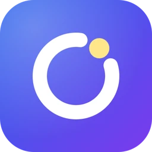
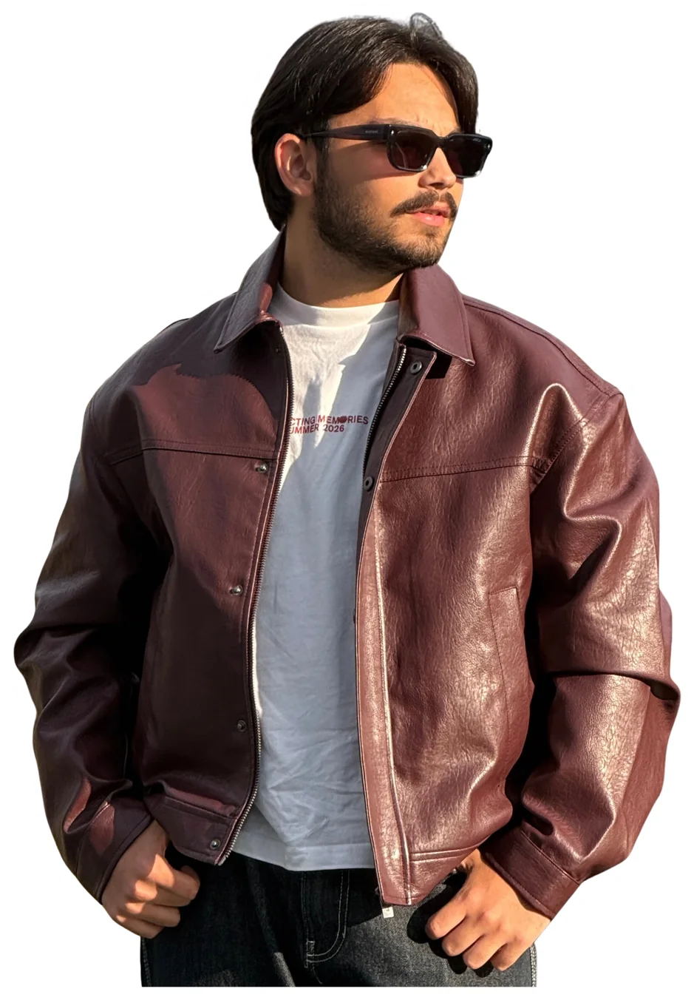

No. 01
Belgesel
Objektif
Milyonlarca insanın içinden geçtiği, ancak çok azının gerçekten görebildiği İstanbul’da; bir fotoğrafçının kentin fazlalıklarından arınmış, soyut ve siyah-beyaz dünyasını keşfetme yolculuğu.
Görsel İletişim Tasarımı öğrencisi. Editoryal tasarım, kurumsal kimlik, tipografi, video ve dijital ürünler üzerine çalışıyorum.
15 proje · editoryal, kimlik, tipografi ve hareketli görüntü.
Milyonlarca insanın içinden geçtiği, ancak çok azının gerçekten görebildiği İstanbul’da; bir fotoğrafçının kentin fazlalıklarından arınmış, soyut ve siyah-beyaz dünyasını keşfetme yolculuğu.
İKİLEM, minimalizm ve maksimalizmi tasarım, mimari, sinema ve gündelik hayat üzerinden karşı karşıya getiriyor. Dieter Rams’tan Ettore Sottsass’a, brütalist mimariden Wes Anderson sinemasına uzanan içerikler; azın sükûneti ile çoğun coşkusu arasındaki gerilimi inceliyor.
İKİLEM dergisinin görsel dilini katlamalı bir broşüre taşıyan tanıtım çalışması. Ön yüz derginin kapak ve editör notunu, arka yüz minimalizm–maksimalizm karşıtlığını öne çıkarıyor.
Baneva’nın b!end albümü için hazırlanan konsept tanıtım broşürü. Albüm analizi, tracklist ve kapak tasarımı tek bir editoryal kurgu içinde bir araya geliyor.
Benfica, yıllar boyunca Portekiz futbolunun en önemli temsilcilerinden biri olmuş; başarıları ve taraftar kültürüyle uluslararası ölçekte tanınan bir kulüp kimliği oluşturmuştur. Bu çalışma, Benfica’nın tarihsel mirasını korurken markayı daha çağdaş, dinamik ve güçlü bir görsel dile taşımayı amaçlar.
Elektrik Yağmuru adlı kitap için ön kapak, arka kapak ve ayraç tasarımı. Neon tonlar ve gece şehri atmosferi, kapaktan ayraca kadar tutarlı bir seri oluşturuyor.
İki konsept film afişi: dramatik bir portre üzerine kurulu “Balıkçı” ve yatay formatta yeniden yorumlanan “Kong: Skull Island”.
Farklı müzik türleri ve ruh hâlleri için hazırlanan albüm ve single kapak tasarımları; tipografi, fotoğraf ve kolajla kurulan sekiz ayrı görsel dil.
Kişisel bir tasarım stüdyosu için konsept kartvizit. Sıcak, retro bir renk paleti ve güçlü bir başlık tipografisiyle kurulan ön ve arka yüz.
Geleneksel Türk kilim motifleriyle kurgulanan SuYolu marka afişi ve Düzce’nin simge mekânlarını tanıtan Instagram kaydırmalı gönderisi.
“Roket nasıl uçar?” sorusunu 55 saniyede anlatan, dikey formatta hazırlanmış bilgilendirici animasyon videosu.
Her harfin farklı bir malzeme ve karakterle yorumlandığı üç boyutlu alfabe tasarımı ve bu alfabeyle hazırlanan kupa uygulaması.
Ad ve soyadın baş harflerinden (S · N · Y) türetilen monogram; açık ve koyu zemin kullanımlarıyla birlikte.
Kelimelerin anlamını harf formuyla görselleştiren tipogram çalışması ve gotik harflerle hazırlanan modern kaligrafi kompozisyonu.
San Francisco ve Verdana yazı karakterlerinin tarihini, ağırlıklarını ve karakter setini tanıtan iki specimen poster.
Kendi ihtiyaçlarımdan yola çıkarak tasarlayıp geliştirdiğim, canlıda kullanılan web uygulamaları.

Aboneliklerini, ödeme günlerini ve aylık harcamanı tek yerden takip etmeni sağlayan, iPhone ve Mac’e yüklenebilen web uygulaması.
Üniversite öğrencileri için ders programı, haftalık notlar, ödev takibi ve yoklama yönetimini tek ekranda toplayan uygulama.
Lyric edit, showreel ve animasyon alanlarındaki kısa video çalışmaları.

İstanbul Medeniyet Üniversitesi Görsel İletişim Tasarımı 3. sınıf öğrencisiyim. Grafik tasarım ve videografi alanlarında üretiyor; dergi, broşür, kitap kapağı ve kurumsal kimlik gibi basılı işlerin yanında video kurgu ve hareketli içerikler üzerine çalışıyorum. Son dönemde tasarım bakışımı kendi geliştirdiğim web uygulamalarına da taşıyorum.
Tasarım sürecinde estetik kadar işlevselliğe de önem veririm. Detaycı, gelişmeye açık ve üretmeyi seven bir tasarımcıyım.
İstanbul Medeniyet Üniversitesi
Görsel İletişim Tasarımı
3. sınıf
Photoshop
Illustrator
After Effects
Premiere Pro
Editoryal & basılı tasarım
Kurumsal kimlik · Tipografi
Video kurgu & animasyon
Web uygulamaları
Sosyal medya hesaplarının yönetimi, teknik rapor sayfa düzeni ve sponsorluk dosyası tasarımı.
Derneğin sosyal medya hesabında içerik çalışmaları.
Takımın sosyal medya hesabında içerik çalışmaları.